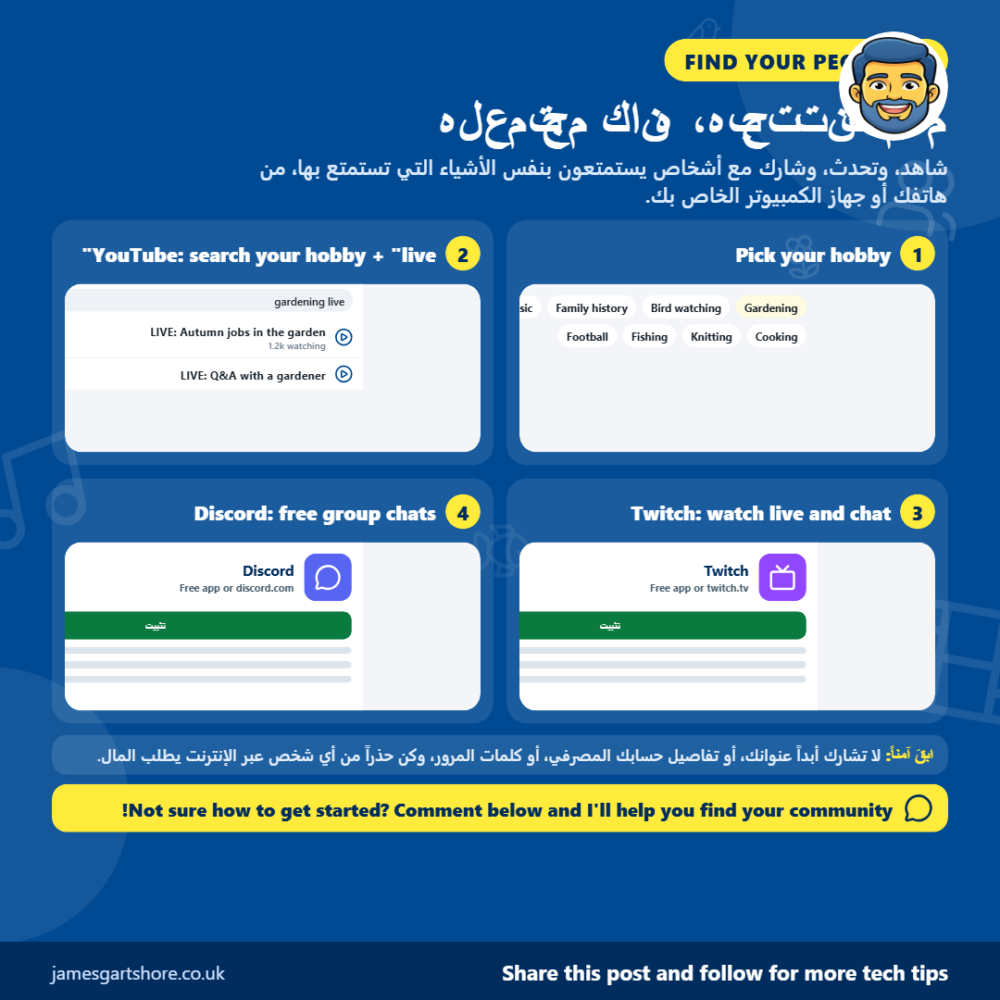
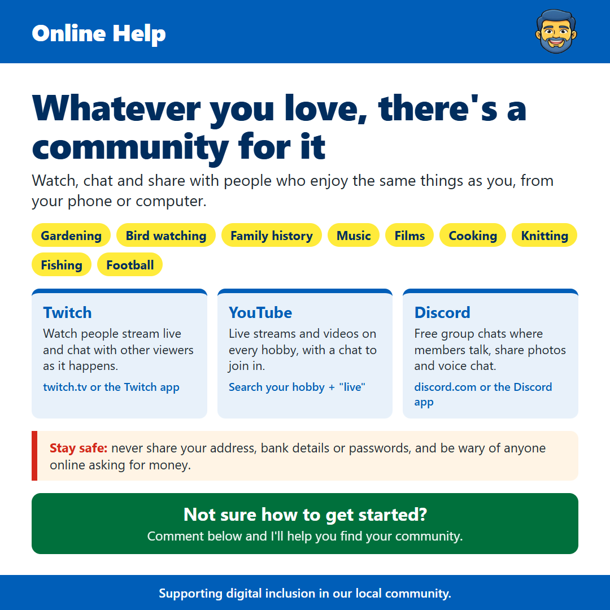

Online Communities
من جيمس غارتشور · · التواصل عبر الإنترنت والبقاء متصلاً
See the old version of this poster

Download the old versionمرحباً بالجميع، أردت أن أشارككم شيئاً لا يدرك الكثير من الناس أنه موجود.
مهما كانت هوايتك، سواء كانت البستنة، أو مشاهدة الطيور، أو تاريخ العائلة، أو الموسيقى، أو الأفلام، أو الطبخ، أو الكروشيه، أو الصيد، أو كرة القدم، فمن المؤكد تقريباً أن هناك مجتمعاً عبر الإنترنت من الأشخاص يحبون الشيء نفسه. إنها طريقة رائعة لتعلم شيء جديد، والتحدث، والشعور بأنك جزء من شيء ما، خاصة إذا كنت تعيش بمفردك أو لا تستطيع الخروج بقدر ما ترغب.
تويتش (twitch.tv) هو موقع وتطبيق يقوم فيه الناس بالبث المباشر، ويمكن لكل من يشاهد يمكنه الدردشة معاً في صندوق بجوار الفيديو. الأمر ليس مجرد ألعاب. هناك كاميرات للبث المباشر لأطعمة الطيور، وأشخاص يزرعون، ويطبخون، ويرسمون، والمزيد. يعمل يوتيوب بطريقة مماثلة. بالإضافة إلى مقاطع الفيديو العادية، يقوم الكثير من الناس ببث مباشر مع دردشة بجانبه. فقط ابحث عن هوايتك باستخدام كلمة "مباشر" بعدها، مثل "مشاهدة الطيور مباشرة".
ديسكورد (Discord): هو تطبيق مجاني للدردشات الجماعية، يسمى الخوادم (servers). كل خادم يشبه نادياً له اهتمام معين، حيث ينشر الأعضاء الرسائل والصور، ويمكنهم حتى الانضمام إلى الدردشات الصوتية للتحدث. لديه العديد من البثين المباشرين ويوتيوب لديهم خادم ديسكورد خاص بهم، وعادة ما تجد رابط دعوة أسفل مقاطع الفيديو أو البث الخاص بهم.
كلها مجانية للاستخدام. ستحتاج إلى إنشاء حساب إذا كنت تريد الدردشة، ولكن يمكنك فقط المشاهدة طالما ترغب في ذلك أولاً لتتعرف عليها. لا أحد يمانع الأشخاص الذين يشاهدون فقط، والكثير من الناس يفعلون ذلك.
كما هو الحال مع أي شيء عبر الإنترنت، حافظ على سلامتك. لا تشارك أبداً عنوانك، أو تفاصيل البنك، أو كلمات المرور، وكن حذراً من أي شخص يحول المحادثة إلى رسائل خاصة ثم يبدأ في طلب المال أو بطاقات الهدايا، مهما بدت ودوداً.
إذا كنت ترغب في المساعدة في البدء أو العثور على مجتمع لهوايتك، فقط أرسل لي رسالة وسأبذل قصارى جهدي للمساعدة.
آمل أن يساعدك هذا، ولا تتردد في مشاركته مع أي شخص قد يجده مفيدًا.